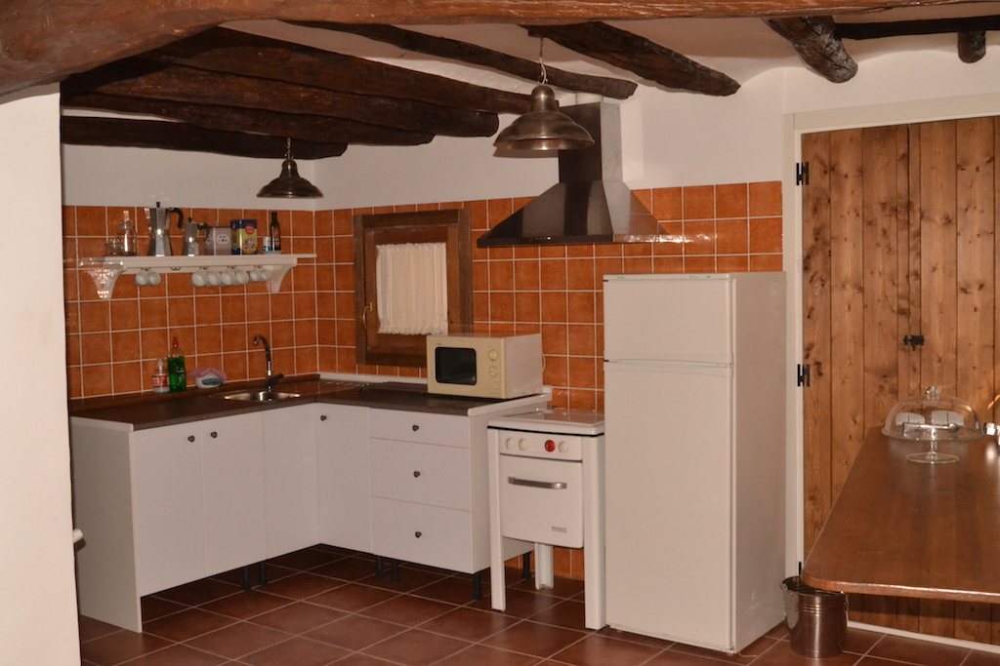
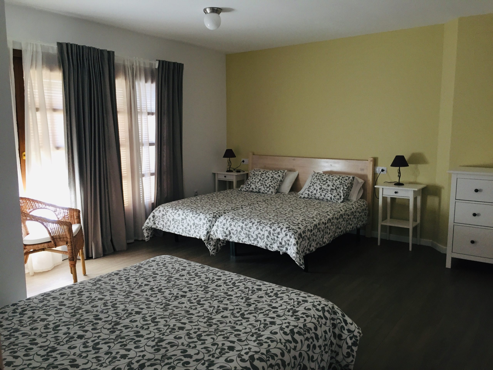
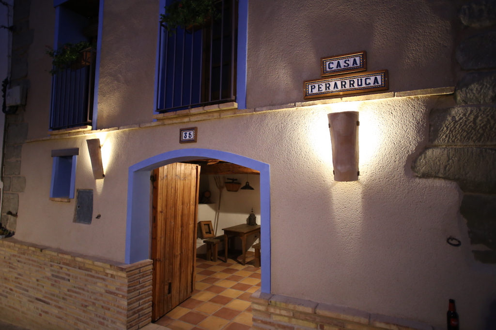
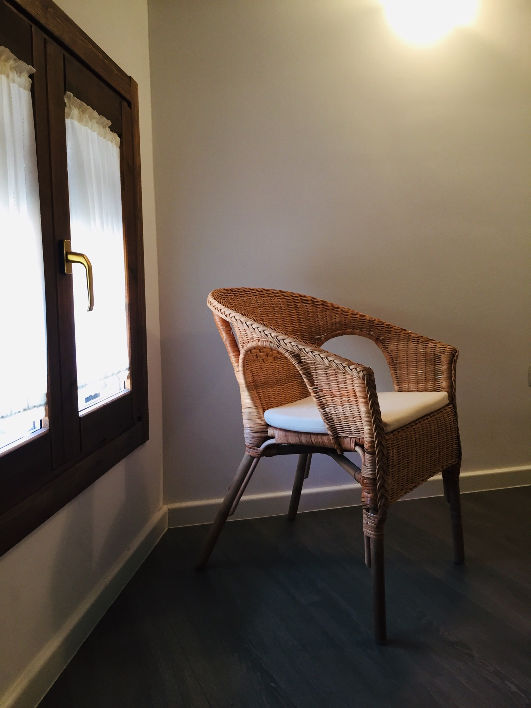
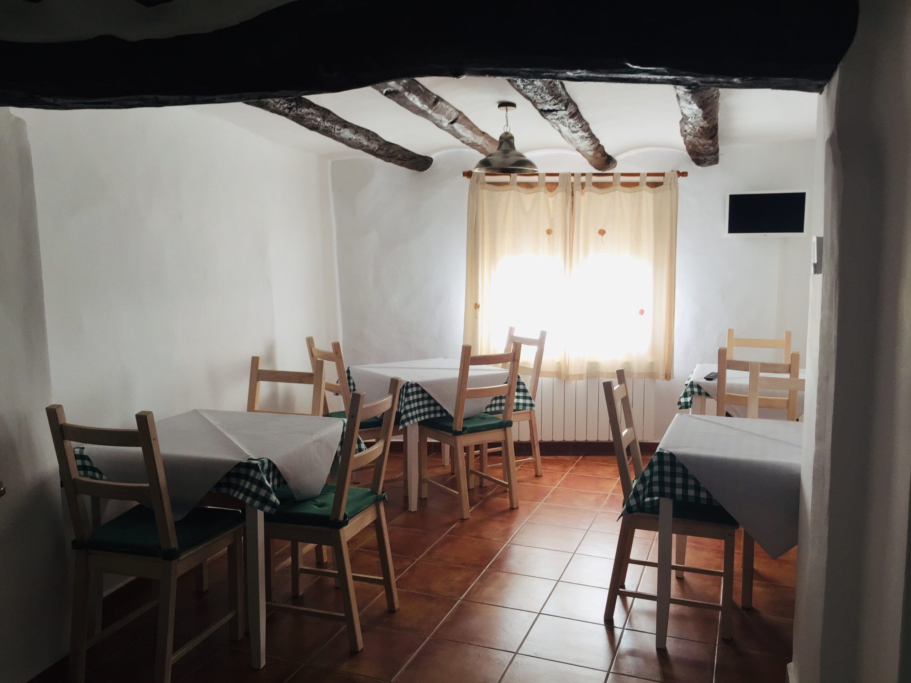
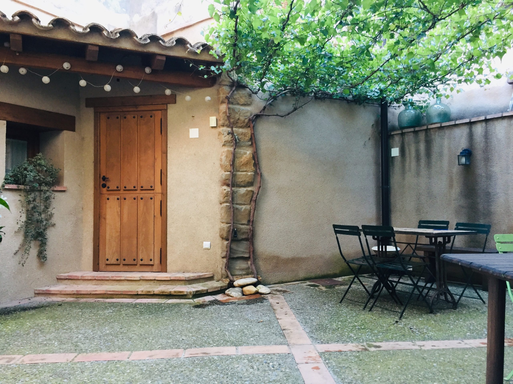
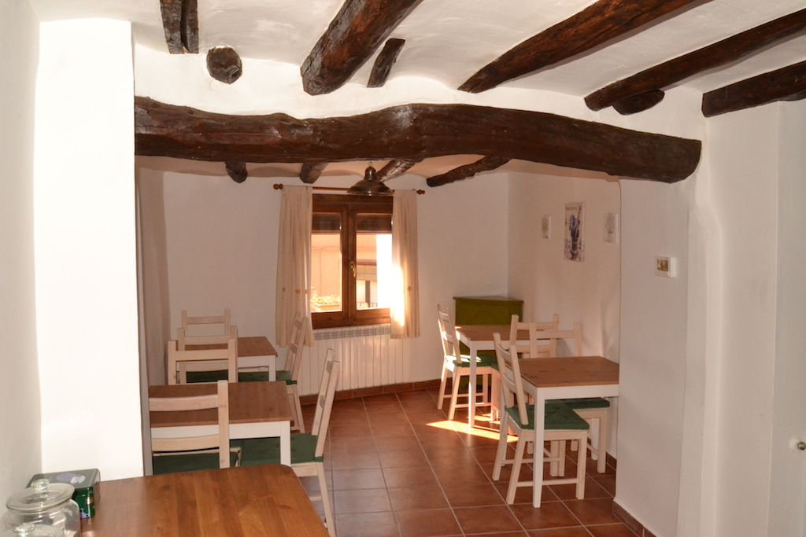

Patio y recepción
El patio de entrada recibe a los huéspedes y funciona como recepción de la casa.
El corazón de Casa Perarruga
Antigua casa de pueblo de finales del siglo XIX, totalmente reformada y habilitada como vivienda de turismo rural en 2016.
Pozán de Vero · Huesca
Casa Perarruga se encuentra en el pueblo de Pozán de Vero, entre los viñedos del Somontano y la naturaleza de la Sierra de Guara. Cada espacio está pensado para que descanses, compartas y te sientas como en casa.

El patio de entrada recibe a los huéspedes y funciona como recepción de la casa.
Una habitación cuádruple, cocina-comedor equipada a disposición de los clientes y una terraza con mesas para desayunar o disfrutar del silencio.
Dos habitaciones dobles y una cuádruple, todas con baño privado dentro.








.jpg)


El entorno y la casa
La casa se encuentra situada en la tranquila localidad de Pozán de Vero, rodeada de campos de olivo, almendros, viñedos y huertas, a orillas del río Vero y al paso por la comarca del Somontano de Barbastro. Un paseo por sus calles nos descubrirá hermosas casas construidas con tapial, piedra y ladrillo entre los siglos XVI y XVIII.

01 · Agua y naturaleza
Como puerta de entrada y salida del municipio, encontramos dos magníficos azudes construidos con potentes muros de piedra. Antiguamente derivaban agua hacia acequias y molinos; hoy forman pozas donde disfrutar de un refrescante baño en verano, accesibles por un cómodo camino entre huertos y vegetación.
.jpg)
02 · Historia y paisaje
Un antiguo camino conduce hasta esta ermita del siglo XVIII, desde donde se contempla una hermosa vista panorámica del valle medio del Vero y de las plantaciones de viñedo.
.jpeg)
03 · Sabores del Somontano
En el pueblo encontrarás Brasa y Birra, un restaurante con un ambiente familiar y acogedor que ofrece una propuesta culinaria basada en cocina casera con toques tradicionales y modernos que conquista el paladar de quienes lo visitan.

04 · Tiempo libre
Pozán de Vero cuenta con piscinas municipales e instalaciones deportivas para disfrutar del tiempo libre y completar tu estancia con actividades al aire libre.